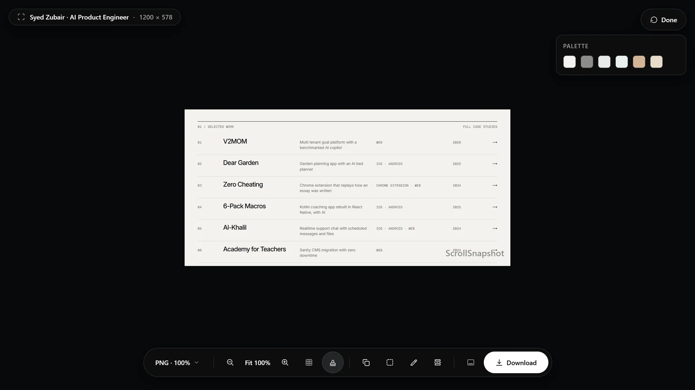

Set it up once
Open Settings and choose Watermark in the sidebar. The toggle at the top, Add a watermark to every capture, switches it on. Below it, a live preview shows the effect of every change as you make it, so you can see the result without capturing anything.
What you can set
- Text: whatever you want stamped, such as a name, a site, or a copyright line.
- Logo: press Choose an image. A PNG with a transparent background works best. It is kept on this device only, and stays when settings are reset.
- Position: a grid of nine spots, three across and three down, or Tiled to repeat it across the whole image.
- Text colour: Light or Dark. Choose the one that reads against the pages you capture most.
- Size, as a percentage of the image width.
- Opacity, from faint to solid.
- Distance from the edge, so the mark does not sit hard against the border.
- A corner placement at low opacity is a courtesy mark. Tiled is meant to discourage reuse.
- Check the preview with both Light and Dark. A light mark vanishes on a white page, and a dark one on a dark page.
See it before you save
Once it is on, the watermark shows over the capture on the result page, so you see it before you download anything.

Where it goes
The watermark is added to Download, Copy, and PDF, and to each of the images in a slices ZIP. What you see on the result page is what is saved.
Switch it for one capture
Once you have set a watermark up, a stamp button appears on the result toolbar. Its tooltip says whether the watermark is on or off for this capture. Press it to leave the watermark off for one image without touching your settings.
It works the other way too. If you set a watermark up but leave Add a watermark to every capture off, the stamp button still lets you add it to a single screenshot.
Try it
- Open Settings and choose Watermark.
- Enter some text or choose a logo, then pick a position and opacity.
- Capture something, check the preview on the result page, and download it.